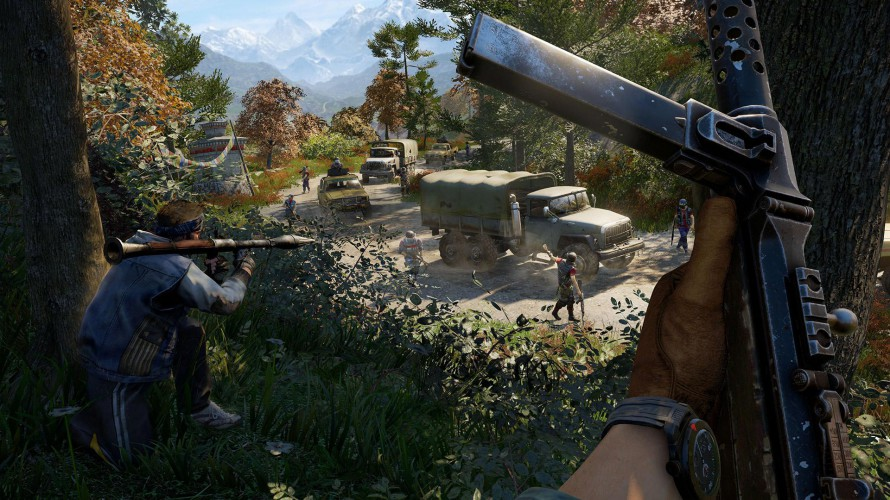
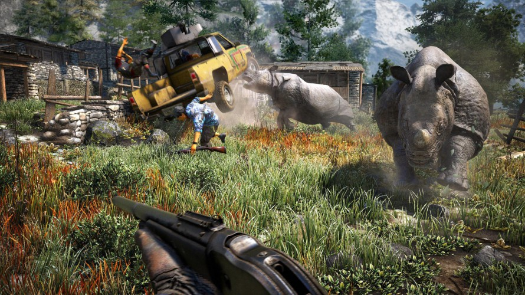
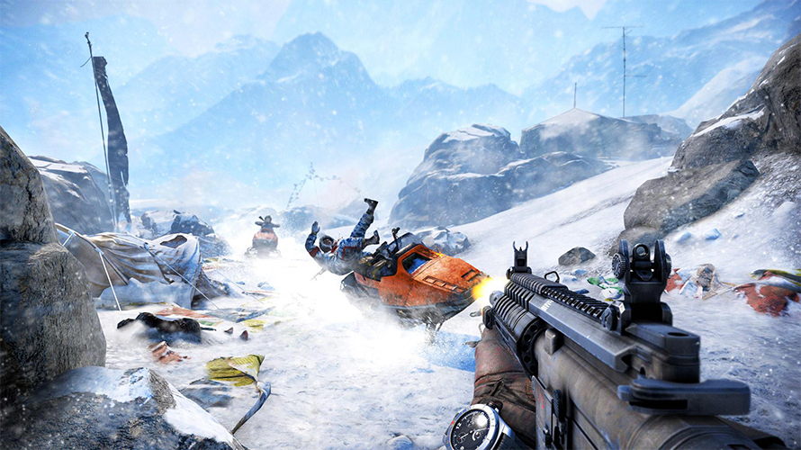
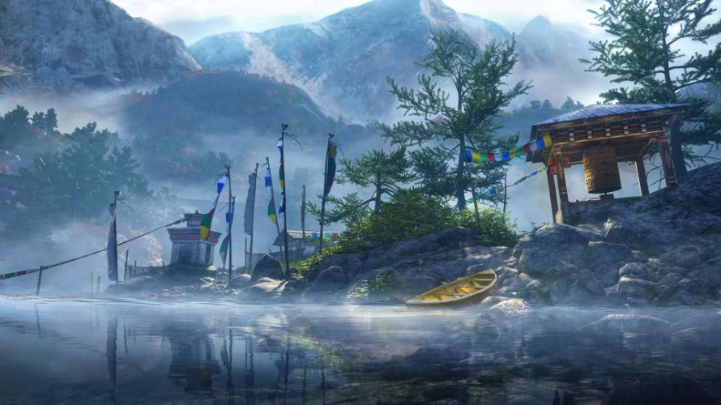

Slapeloze nachten voor Ubisoft. In nog geen week tijd brengt de Franse spelontwikkelaar drie hooggeanticipeerde blockbusters uit: Assassin’s Creed Unity, Assassin’s Creed Rogue en de openwereld-shooter Far Cry 4. De opvolger op Far Cry 3 verruilt het zonovergoten tropische eiland voor een mythisch koninkrijk, midden in het Aziatische Himalaya-gebergte. Na het licht tegenvallende Unity rijst de vraag of Far Cry 4 de torenhoge verwachtingen wél waarmaakt.
Slapeloze nachten voor Ubisoft. In nog geen week tijd brengt de Franse spelontwikkelaar drie hooggeanticipeerde blockbusters uit: Assassin’s Creed Unity, Assassin’s Creed Rogue en de openwereld-shooter Far Cry 4. De opvolger op Far Cry 3 verruilt het zonovergoten tropische eiland voor een mythisch koninkrijk, midden in het Aziatische Himalaya-gebergte. Na het licht tegenvallende Unity rijst de vraag of Far Cry 4 de torenhoge verwachtingen wél waarmaakt.
Waar Far Cry 3 bekend stond om zijn zorgeloze vakantiesfeer (met cliche personages), toont de opvolger een ander, duister gezicht. De makers laten de speler al snel kennismaken met de grillige Pagan Min – ingesproken door Troy Baker - de zelfbenoemde heerser van het fictieve koninkrijk Kyrat, en vanzelfsprekend de nieuwe boef in de game. In vrijwel elke scéne doet Min sterk denken aan Vaas, de geesteszieke idioot die je vrienden in het vorige deel in zijn greep hield. Beide schurken delen dezelfde verknipte trekjes en visie op de wereld.
Enerzijds is het jammer dat Ubisoft opnieuw voor een dergelijke anatagonist kiest, anderzijds geeft dit het verhaal opnieuw een angstaanjagend karakter. Anders dan in het vorige deel is de hoofdpersoon geen huiverige zeurpiet (goddank). Je treedt in de schoenen van Ajay, een veerkrachtige twintiger die op een manier is verbonden met de schurk van Kyrat. Op wat voor een manier houden de makers in het midden, maar door keurig de verhaalmissies te volgen kom je steeds meer te weten in wat voor een situatie je nu weer verzeild bent geraakt.
Far Cry zou Far Cry niet zijn als er naast het verhaal nog genoeg te beleven viel. Opnieuw kun je gaan en staan waar je wilt. De eerste keer dat je vanuit de bergen naar een dorp rijdt met een quad, langs kabbelende beekjes en loslopend wild om vervolgens je bestemming in de verte te zien liggen, laat in één oogopslag zien wat voor een gigantische game Ubisoft heeft gemaakt. De hoeveelheid content, opgebouwd uit de omvang van Kyrat, het aantal missies, losstaande gebeurtenissen en activiteiten en de portie aan dialogen, maakt opnieuw indruk. Hoe indrukwekkend ook, toch besloop ons het gevoel dat we een geüpgradete versie van Far Cry 3 aan het spelen waren.
Ondanks de grote (hoogte)verschillen in de werelden tussen het derde en vierde deel, lopen beide games over van de overeenkomsten. Dit komt voor een groot deel door de vijandelijke kampjes en radiotorens, die her en der door Kyrad verspreid liggen. Ook hier moet je radiotorens beklimmen om zo missies te ontgrendelen en locaties, dieren en voorwerpen op de kaart te onthullen. Dit blijft – zeker voor de ervaren Far Cry-speler – een paar keer leuk, maar al snel slaat de verveling toe en voelt het als een verplicht nummertje om telkens weer die torens te beklimmen.
Eigenlijk geldt hetzelfde voor het innemen van de vijandelijke kampen. Je wordt weliswaar helemaal vrij gelaten op wat voor een manier je de vijanden gaat belagen, maar ook hier knaagt het gevoel dat Ubisoft hier meer mee had kunnen doen. Het zijn toch weer die (ergerlijk domme) soldaten die hun patrouillerondjes lopen, bijna vragend om een mes tussen hun ribben. Daarom ging onze aandacht al snel uit naar één van de vier forten in Kyrat. Ook deze reusachtige vestingen moet je ontdoen van al het rondlopende gespuis. Daarvoor zijn natuurlijk legio mogelijkheden te bedenken.
Om de hoge muren te kunnen bedwingen, kun je ervoor kiezen om je grapple hook te gebruiken. Klim omhoog, slinger naar de overkant en spring vervolgens op die ene moeilijk begaanbare plek. Het gaat zo makkelijk als dat het klinkt. Vervolgens dring je via een grot het fort binnen, waarna je op slinkse wijze met een sluipschuttersgeweer (met daarop een silencer) dodelijke headshots maakt. Met stenen of stukken vlees die je vijanden afleiden heb je genoeg voorhanden om ook deze aanpak te proberen.
Ben je wat minder geduldig van aard, dan kun je ervoor kiezen om de grote poort kapot te rammen met een olifant. Dit deden we met een grote glimlach op ons gezicht. Hierna sprongen we van het wilde beest af en keken toe hoe hij meerdere soldaten met zijn slurf de lucht in lanceerde. Hij leidde de boel zo af dat wij ongestoord het fort binnen konden.
Far Cry 4 laat continu jouw fantasie de vrije loop doen. Des te leuker wordt het wanneer je die fantasie kunt delen met een vriend of vriendin. Dat wordt mogelijk via de coöperatieve modus, waarbij je met z’n tweeën door de wereld van Kyrat kunt banjeren en je kunt doen en laten waar jullie zin in hebben - het volgen van het verhaal daargelaten. We konden onze lach niet onderdrukken toen we met onze vlammenwerpers een heel kamp in lichterlaaie hadden gezet. De volledige wereld van Kyrat ligt open om samen te verkennen en te veroveren
Alle voortgang die de spelers samen boeken, wordt bewaard voor het verdere verloop in het singleplayeravontuur. In dat avontuur maken de missies die zich in de Himalaya afspelen misschien wel de meeste indruk. Nu gaan deze missies meestal niet verder dan het omleggen van persoon A en het ophalen en terugbrengen van pakket B, maar het zijn juist de dynamische omgevingen die indruk maken. Zo werden we op een gegeven moment belast met de taak om een bebaarde schurk uit te schakelen met een mes. Deze leider van een groep criminelen bevond zich echter in een lager gelegen kamp, aan de overkant van een diep ravijn.
Far Cry 4 is vooral een logische opvolger op het derde deel, dat wereldwijd door zowel liefhebbers als critici groots onthaald werd. Men hoeft geen baanbrekende vernieuwingen, overdonderende visuals of een compleet ander verhaal te verwachten, maar wel een shooter die bijna alles beter doet dan de concurrentie. Vijf minuten op Kyrat is genoeg om verliefd te worden op de omgeving en alles wat je daar kunt vinden en beleven. De vrijheid is ongeëvenaard, de shoot-outs enerverend en de multiplayer vermakelijk: Far Cry 4 is een indrukwekkende open-wereld shooter die perfect in de huidige tijdsgeest past.